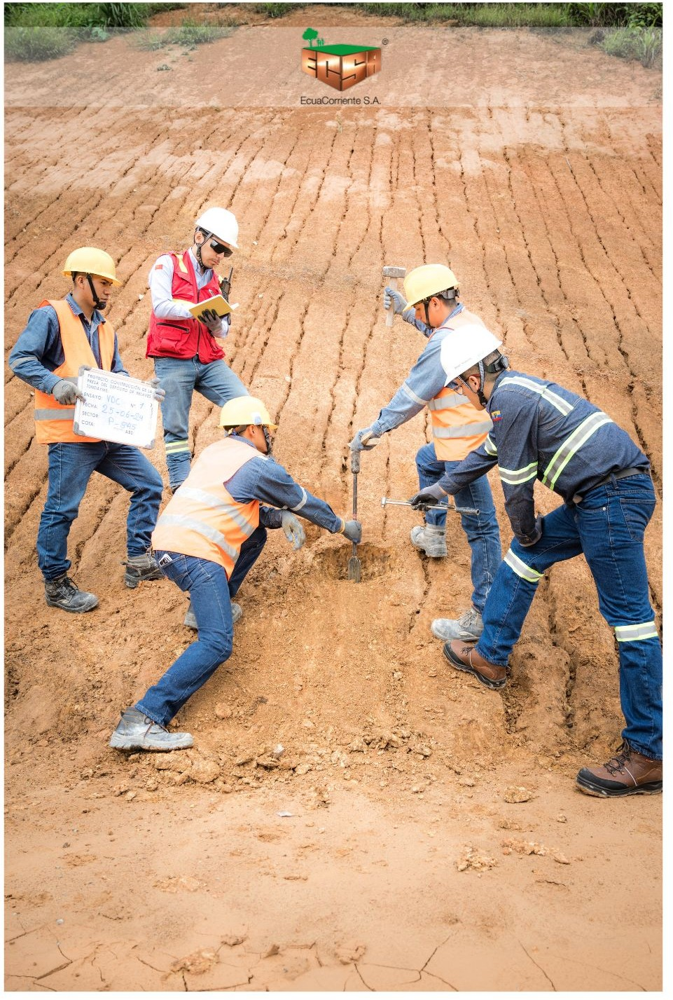

ENSAYOS

límites de Atterberg
Los límites se basan en el concepto de que en un suelo de grano fino solo pueden existir cuatro estados de consistencia según su humedad. Así, un suelo se encuentra en estado sólido cuando está seco. Al agregársele agua poco a poco, va pasando sucesivamente a los estados de semisólido, plástico y, finalmente, líquido.

Ensayo de Veleta de Corte
Ensayo de veleta de corte en suelos saturados de grano fino.
饱和细粒土的十字板剪切试验
ASTM D2573